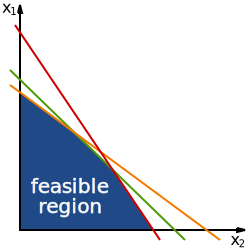

Overview: This lecture covers convex optimization problem classes—LP, QP, SOCP, SDP—and the mathematical foundations for recognizing, classifying, and formulating convex problems. We develop the theoretical underpinnings of standard forms and establish the hierarchy of problem classes that governs modern optimization.
Prerequisites:Lecture 03 (convex functions, first- and second-order conditions, common convex functions)
Learning Objectives
After this lecture, you will be able to:
Define and recognize the standard form of a convex optimization problem
Classify problems into LP, QP, SOCP, and SDP categories with precise criteria
Understand the containment hierarchy: LP ⊂ SOCP ⊂ SDP
Formulate real-world problems using standard forms
Apply problem reformulation techniques to convert non-standard forms
Understand quasiconvex optimization and its relationship to convex optimization
Make informed decisions about solver selection based on problem structure
Statement: If $f_i$ are convex and $h_j$ are affine, then $\mathcal{F}$ is a convex set.
Proof: The feasible set $\mathcal{F}$ is the intersection of sublevel sets $\{x \mid f_i(x) \le 0\}$ (convex by Lecture 03) and affine sets $\{x \mid h_j(x) = 0\}$ (convex by definition). Since the intersection of convex sets is convex, $\mathcal{F}$ is convex.
1.3 Optimal Value and Optimal Points
The optimal value is $p^* = \inf\{f_0(x) \mid x \in \mathcal{F}\}$
$x^*$ is optimal (or a minimizer) if $x^* \in \mathcal{F}$ and $f_0(x^*) = p^*$
$x$ is $\epsilon$-suboptimal if $x \in \mathcal{F}$ and $f_0(x) \le p^* + \epsilon$
$x$ is locally optimal if there exists $R > 0$ such that $f_0(x) = \inf\{f_0(z) \mid z \in \mathcal{F}, \|z - x\|_2 \le R\}$
Fundamental Property: Local = Global
Statement: For convex optimization problems, any locally optimal point is globally optimal.
Proof: This is a consequence of the convexity of $f_0$ and $\mathcal{F}$, as established in Lecture 01. If $x$ is locally optimal but not globally optimal, we can construct a line segment from $x$ to a better point that contradicts local optimality.

A classic example of a feasible set for a Linear Program (LP). The region is a convex polygon defined by linear inequality constraints. The optimal solution occurs at a vertex of the polyhedron.
Given $n$ foods with costs $c_i$ and $m$ nutrients, where food $j$ contains $A_{ij}$ units of nutrient $i$, find the cheapest diet meeting minimum nutrient requirements $b_i$:
Objective convexity: Since $P \succeq 0$, the quadratic form $f_0(x) = \frac{1}{2} x^\top P x + q^\top x + r$ is convex. This follows from the second-order condition: $\nabla^2 f_0(x) = P \succeq 0$.
Feasible set convexity: The constraints define a polyhedron, which is convex.
Conclusion: A QP is a convex optimization problem.
3.2 Key Properties
Optimality: If $P \succ 0$ (positive definite), the problem is strictly convex and has a unique minimizer (if feasible)
KKT conditions: Necessary and sufficient for optimality (Lecture 05)
Example 3.1: Least-Squares with Linear Inequality Constraints
Minimize $\|Ax - b\|_2^2$ subject to $Cx \preceq d$:
$
\begin{aligned}
\text{minimize} \quad & x^\top A^\top A x - 2 b^\top A x + b^\top b \\
\text{subject to} \quad & Cx \preceq d
\end{aligned}
$
This is a QP with $P = 2A^\top A \succeq 0$ and $q = -2A^\top b$.
Example 3.2: Markowitz Portfolio Optimization
Given $n$ assets with expected returns $\mu \in \mathbb{R}^n$ and covariance matrix $\Sigma \in \mathbb{S}_{++}^n$, find a portfolio $x \in \mathbb{R}^n$ (where $x_i$ is the fraction invested in asset $i$) minimizing risk for a target return $r_{\text{target}}$:
$
\begin{aligned}
\text{minimize} \quad & x^\top \Sigma x \\
\text{subject to} \quad & \mu^\top x \ge r_{\text{target}} \\
& \mathbf{1}^\top x = 1 \\
& x \ge 0
\end{aligned}
$
This is a QP with $P = 2\Sigma \succ 0$, capturing the fundamental risk-return tradeoff in finance.
$
\begin{aligned}
\text{minimize} \quad & f^\top x \\
\text{subject to} \quad & \|A_i x + b_i\|_2 \le c_i^\top x + d_i, \quad i = 1, \dots, m \\
& Fx = g
\end{aligned}
$
where $x \in \mathbb{R}^n$ is the variable. Each constraint $\|A_i x + b_i\|_2 \le c_i^T x + d_i$ is called a second-order cone constraint.
4.2 The Second-Order Cone (Lorentz Cone)
The second-order cone (or Lorentz cone) in $\mathbb{R}^{n+1}$ is:
Conclusion: Thus $(\theta x_1 + (1-\theta) x_2, \theta t_1 + (1-\theta) t_2) \in \mathcal{L}^{n+1}$, so $\mathcal{L}^{n+1}$ is convex.
4.3 Key Properties
Generality: SOCP subsumes LP and QP
Solvers: Efficiently solved by interior-point methods
Applications: Robust optimization, robust least squares, $\ell_1$ and $\ell_\infty$ norm minimization
4.4 Standard SOCP Examples
Example 4.1: Robust Least Squares
Consider the least-squares problem $\min \|Ax - b\|_2$ where $A$ is uncertain: $A \in \{A_0 + \sum_{i=1}^p u_i A_i \mid \|u\|_2 \le 1\}$. The robust version minimizes the worst-case residual:
$
\min_x \max_{\|u\|_2 \le 1} \left\| \left(A_0 + \sum_{i=1}^p u_i A_i\right) x - b \right\|_2
$
Derivation (Unstructured Uncertainty)
Step 1: Define the uncertainty set.
Assume the matrix $A$ is uncertain but bounded: $A = A_0 + \Delta$, where $\|\Delta\|_2 \le \rho$. We want to minimize the worst-case residual:
$$ \min_x \max_{\|\Delta\|_2 \le \rho} \|(A_0 + \Delta)x - b\|_2 $$
Step 2: Expand the inner maximization.
Let $r_0 = A_0 x - b$. The term inside the max is $\|r_0 + \Delta x\|_2$.
By the triangle inequality:
$$ \|r_0 + \Delta x\|_2 \le \|r_0\|_2 + \|\Delta x\|_2 \le \|r_0\|_2 + \|\Delta\|_2 \|x\|_2 \le \|r_0\|_2 + \rho \|x\|_2 $$
Step 3: Show the bound is tight.
We need to show there exists a $\Delta^*$ with $\|\Delta^*\|_2 \le \rho$ that achieves this bound.
Choose $\Delta^* = \rho \frac{r_0}{\|r_0\|_2} \frac{x^\top}{\|x\|_2}$ (a rank-1 matrix).
Then $\|\Delta^*\|_2 = \rho$, and $\Delta^* x = \rho \frac{r_0}{\|r_0\|_2} \|x\|_2$.
The vector $\Delta^* x$ is parallel to $r_0$, so $\|r_0 + \Delta^* x\|_2 = \|r_0\|_2 + \|\Delta^* x\|_2 = \|r_0\|_2 + \rho \|x\|_2$.
Step 4: Formulate as SOCP.
The problem becomes $\min_x (\|A_0 x - b\|_2 + \rho \|x\|_2)$.
We introduce slack variables $t_1, t_2$:
$$ \min_{x, t_1, t_2} \quad t_1 + \rho t_2 $$
$$ \text{s.t.} \quad \|A_0 x - b\|_2 \le t_1 $$
$$ \quad \quad \|x\|_2 \le t_2 $$
These are standard second-order cone constraints.
Example 4.2: $\ell_1$ Norm Minimization via SOCP
The problem $\min \|x\|_1$ subject to $Ax = b$ can be written as:
$
\begin{aligned}
\text{minimize} \quad & \mathbf{1}^\top y \\
\text{subject to} \quad & -y \preceq x \preceq y \\
& Ax = b
\end{aligned}
$
which is an LP. However, for more complex norms, SOCP reformulations are essential.
4.5 Hierarchy: LP ⊂ QP ⊂ SOCP
Every LP is a QP (set $P = 0$)
Every QP is an SOCP (quadratic constraints can be expressed as second-order cone constraints)
Recall from Lecture 02 that $\mathbb{S}_+^m$ is a proper cone (convex, closed, pointed, solid).
5.3 Key Properties
Generality: SDP subsumes LP, QP, and SOCP
Complexity: Polynomial-time solvable using interior-point methods
Duality: Strong duality typically holds; dual problem is also an SDP
Applications: Combinatorial optimization relaxations, control theory (LMI), matrix completion
5.4 Standard SDP Examples
Example 5.1: Eigenvalue Minimization
Minimize the maximum eigenvalue of $A(x) = A_0 + \sum_{i=1}^n x_i A_i$:
$
\min_x \lambda_{\max}(A(x))
$
This is equivalent to the SDP:
$
\begin{aligned}
\text{minimize} \quad & t \\
\text{subject to} \quad & A(x) \preceq t I
\end{aligned}
$
The constraint $A(x) \preceq tI$ is equivalent to $tI - A(x) \succeq 0$, which is an LMI (linear matrix inequality).
Example 5.2: Matrix Norm Minimization (Operator Norm)
Minimize the spectral norm (operator norm) of a matrix depending linearly on variables $x$: $\|A(x)\|_2$, where $A(x) = A_0 + \sum_{i=1}^n x_i A_i$.
Derivation of SDP Form
Step 1: Epigraph Form.
The problem is equivalent to:
$$ \text{minimize } t \quad \text{subject to } \|A(x)\|_2 \le t $$
Step 2: Singular Value Characterization.
The spectral norm $\|A\|_2$ is the maximum singular value $\sigma_{\max}(A)$.
The condition $\sigma_{\max}(A) \le t$ (for $t \ge 0$) is equivalent to saying all eigenvalues of $A^\top A$ are $\le t^2$:
$$ A(x)^\top A(x) \preceq t^2 I $$
Step 3: Schur Complement.
We can rewrite the quadratic matrix inequality $t^2 I - A(x)^\top A(x) \succeq 0$ using the Schur complement.
Recall that $\begin{bmatrix} A & B \\ B^\top & C \end{bmatrix} \succeq 0$ iff $C \succeq 0$ and $A - B C^{-1} B^\top \succeq 0$.
We want to match $tI - A(x)^\top (tI)^{-1} A(x) \succeq 0$.
Set $A_{block} = tI$, $B_{block} = A(x)^\top$, $C_{block} = tI$.
Then the LMI is:
$$ \begin{bmatrix} tI & A(x)^\top \\ A(x) & tI \end{bmatrix} \succeq 0 $$
Step 4: Final SDP Formulation.
$$
\begin{aligned}
\text{minimize} \quad & t \\
\text{subject to} \quad & \begin{bmatrix} tI & A(x)^\top \\ A(x) & tI \end{bmatrix} \succeq 0
\end{aligned}
$$
This is a standard SDP in variables $(x, t)$.
Interactive: SDP Visualizer
Purpose: 3D visualization of the positive semidefinite cone for $2 \times 2$ matrices.
Explore the geometry of $\mathbb{S}_+^2$ (a 3D cone in the space of symmetric matrices)
Understand how SDP constraints restrict feasible matrices
Connect eigenvalues to cone membership
5.5 The Hierarchy: LP ⊂ QP ⊂ SOCP ⊂ SDP
This inclusion hierarchy is strict:
Every LP is a QP (take $P = 0$)
Every QP can be formulated as an SOCP
Every SOCP can be formulated as an SDP (the second-order cone can be represented via LMI)
Embedding SOCP into SDP via Schur Complement
We want to show that the second-order cone constraint $\|y\|_2 \le t$ (where $y = Ax+b, t = c^\top x + d$) is equivalent to a Linear Matrix Inequality (LMI).
Step 1: Schur Complement Lemma.
Recall that for a block matrix $M = \begin{bmatrix} A & B \\ B^\top & C \end{bmatrix}$ with $A \succ 0$, we have $M \succeq 0 \iff C - B^\top A^{-1} B \succeq 0$.
Step 2: Construct the matrix.
Consider the matrix:
$$
M = \begin{bmatrix} tI & y \\ y^\top & t \end{bmatrix}
$$
Assume $t > 0$ (if $t=0$, we need $y=0$, which is handled by the limit or closure). Then $tI \succ 0$.
Step 3: Apply the Lemma.
Identifying blocks: $A = tI$, $B = y$, $C = t$.
The condition $M \succeq 0$ is equivalent to:
$$ t - y^\top (tI)^{-1} y \ge 0 $$
$$ t - \frac{1}{t} y^\top y \ge 0 $$
Multiplying by $t$ (since $t > 0$):
$$ t^2 - y^\top y \ge 0 \implies \|y\|_2^2 \le t^2 $$
Since $t > 0$, this is equivalent to $\|y\|_2 \le t$.
Step 4: Conclusion.
The SOC constraint $\|Ax+b\|_2 \le c^\top x + d$ is equivalent to the LMI:
$$
\begin{bmatrix} (c^\top x + d) I & Ax + b \\ (Ax + b)^\top & c^\top x + d \end{bmatrix} \succeq 0
$$
Since this constraint is linear in the matrix variable (which depends linearly on $x$), an SOCP is a special case of an SDP.
6. Problem Reformulation and Equivalence
6.1 Equivalent Problems
Two optimization problems are equivalent if the solution of one can be readily obtained from the solution of the other, and vice versa.
Common Equivalence Transformations:
Change of variables: Substitute $x = \phi(y)$ where $\phi$ is one-to-one
Slack variables: Introduce $s$ to turn $f(x) \le t$ into $f(x) + s = t$, $s \ge 0$
Epigraph form: Minimize $t$ subject to $f(x) \le t$ (instead of minimizing $f(x)$)
Eliminating equality constraints: Use $Ax = b$ to eliminate variables
6.2 Epigraph Reformulation
The problem $\min f_0(x)$ s.t. $x \in \mathcal{C}$ is equivalent to:
$
\begin{aligned}
\text{minimize} \quad & t \\
\text{subject to} \quad & f_0(x) \le t \\
& x \in \mathcal{C}
\end{aligned}
$
This transformation is crucial for reformulating problems with complex objectives into standard forms.
6.3 Example: Minimizing $\ell_\infty$ Norm
Minimize $\|Ax - b\|_\infty$ can be reformulated as an LP:
$
\begin{aligned}
\text{minimize} \quad & t \\
\text{subject to} \quad & -t \mathbf{1} \preceq Ax - b \preceq t \mathbf{1}
\end{aligned}
$
6.4 Eliminating Linear Equality Constraints
Given $\min f_0(x)$ s.t. $Ax = b$ and other constraints, if $\text{range}(A) = \mathbb{R}^p$, we can parameterize the solution space as:
$
x = A^\dagger b + (I - A^\dagger A) z
$
where $A^\dagger$ is the pseudoinverse and $z \in \mathbb{R}^n$ is a new variable. This reduces the problem dimension.
Interactive: Problem Reformulation Tool
Purpose: Learn how to reformulate non-standard problems into LP, QP, SOCP, or SDP forms.
Select a non-standard problem (e.g., $\ell_1$, $\ell_\infty$ minimization)
See reformulation to standard form
Understand epigraph and slack variable techniques
7. Quasiconvex Optimization
7.1 Quasiconvex Functions
A function $f: \mathbb{R}^n \to \mathbb{R}$ is quasiconvex if its domain and all sublevel sets $\{x \mid f(x) \le \alpha\}$ are convex.
Examples:
$\log x$ on $\mathbb{R}_{++}$ (quasilinear: both quasiconvex and quasiconcave)
$\lceil x \rceil$ (ceiling function)
$x^3$ on $\mathbb{R}$ (not quasiconvex; sublevel sets are not convex)
7.2 Quasiconvex Optimization Problems
A problem is quasiconvex if the objective is quasiconvex and the feasible set is convex:
Quasiconvex optimization can be solved by solving a sequence of convex feasibility problems:
Find interval $[l, u]$ containing $p^*$ (the optimal value)
At each iteration, test if the sublevel set $\{x \in \mathcal{F} \mid f_0(x) \le t\}$ is nonempty (for $t = (l+u)/2$)
Update $[l, u]$ based on feasibility
Repeat until $u - l < \epsilon$
Each feasibility check is a convex problem, so quasiconvex optimization reduces to convex optimization.
8. Disciplined Convex Programming (DCP)
8.1 Motivation
While we can recognize many convex problems, it's often unclear whether a complex formulation is convex. Disciplined Convex Programming is a system of rules for constructing convex optimization problems from basic atoms.
8.2 DCP Rules
Atoms: A set of basic convex/concave/affine functions with known curvature
Composition rules:
A convex function of a convex function is convex
A convex function of a concave function is NOT necessarily convex
A concave function of an affine function is concave
Objective: Minimize a convex function or maximize a concave function
Constraints: Convex constraints of the form $f(x) \le 0$ where $f$ is convex
8.3 DCP in Practice: CVXPY
Tools like CVXPY verify DCP compliance and automatically transform problems to standard solver forms (LP, SOCP, SDP).
Interactive: Solver Selection Guide
Purpose: Decision tree tool for selecting the most appropriate solver (GLPK, CVXOPT, MOSEK, SeDuMi, etc.) based on problem structure and scale.
Input problem characteristics (size, sparsity, cone type)
Receive solver recommendations with rationale
Learn performance tradeoffs between solvers
11. Summary
Overview: This lecture covers convex optimization problem classes—LP, QP, SOCP, SDP—and the mathematical foundations for recognizing, classifying, and formulating convex problems. We develop the theoretical underpinnings of standard forms and establish the hierarchy of problem classes that governs modern optimization.
where $a_i \in \mathbb{R}^n$ and $b_i \in \mathbb{R}$.
(a) Is this a convex optimization problem? Justify your answer.
(b) Reformulate it as a standard LP.
Solution
Part (a): Convexity. The function $f(x) = \max_{i=1,\dots,m} |a_i^\top x - b_i|$ is the pointwise maximum of functions $|a_i^\top x - b_i|$. Since $|a_i^\top x - b_i|$ is convex (it's the composition of the absolute value function with an affine function), and the pointwise maximum of convex functions is convex, $f(x)$ is convex. Thus, this is a convex optimization problem.
Part (b): LP reformulation. We reformulate using epigraph form and absolute value splitting:
$
\begin{aligned}
\text{minimize} \quad & t \\
\text{subject to} \quad & -t \le a_i^\top x - b_i \le t, \quad i = 1, \dots, m
\end{aligned}
$
This is equivalent to:
$
\begin{aligned}
\text{minimize} \quad & t \\
\text{subject to} \quad & a_i^\top x - b_i \le t, \quad i = 1, \dots, m \\
& -a_i^\top x + b_i \le t, \quad i = 1, \dots, m
\end{aligned}
$
This is an LP in variables $(x, t) \in \mathbb{R}^{n+1}$.
P4.2 — QP Formulation: Constrained Least Squares
Consider the problem of finding $x \in \mathbb{R}^n$ that minimizes $\|Ax - b\|_2^2$ subject to $l \preceq x \preceq u$ (box constraints).
(a) Write this problem in standard QP form.
(b) Under what conditions on $A$ is the problem strictly convex (thus having a unique solution)?
Solution
Part (a): QP formulation. Expand the objective:
$
\|Ax - b\|_2^2 = (Ax - b)^\top (Ax - b) = x^\top A^\top A x - 2 b^\top A x + b^\top b
$
The constant $b^\top b$ doesn't affect the minimizer, so we can write:
$
\begin{aligned}
\text{minimize} \quad & x^\top (A^\top A) x - 2 (A^\top b)^\top x \\
\text{subject to} \quad & x \succeq l \\
& -x \succeq -u
\end{aligned}
$
In standard QP form with $P = 2 A^\top A$, $q = -2 A^\top b$, and inequality constraints $x \ge l$, $x \le u$.
Part (b): Strict convexity. The Hessian is $\nabla^2 f(x) = 2 A^\top A$. The problem is strictly convex if and only if $A^\top A \succ 0$, which occurs when $A$ has full column rank (i.e., $\text{rank}(A) = n$).
P4.3 — SOCP Reformulation: $\ell_2$ Regularized Least Squares
(a) Show that this is an SOCP by reformulating it in standard SOCP form.
(b) Compare this to Tikhonov regularization $\|Ax - b\|_2^2 + \lambda \|x\|_2^2$, which is a QP.
Solution
Part (a): SOCP reformulation. Introduce auxiliary variables $t_1, t_2$ for the two norms:
$
\begin{aligned}
\text{minimize} \quad & t_1 + \lambda t_2 \\
\text{subject to} \quad & \|Ax - b\|_2 \le t_1 \\
& \|x\|_2 \le t_2
\end{aligned}
$
Both constraints are second-order cone constraints, so this is an SOCP in variables $(x, t_1, t_2)$.
Part (b): Comparison to QP. Tikhonov regularization $\|Ax - b\|_2^2 + \lambda \|x\|_2^2$ is a QP (quadratic objective). The $\ell_2$ regularized version $\|Ax - b\|_2 + \lambda \|x\|_2$ is not a QP but an SOCP. Both are convex; the choice depends on application requirements (e.g., sparsity-promoting properties differ).
P4.4 — SDP Example: Largest Eigenvalue Minimization
Consider the problem of minimizing $\lambda_{\max}(A_0 + x_1 A_1 + x_2 A_2)$ where $A_0, A_1, A_2 \in \mathbb{S}^n$ are given symmetric matrices.
(a) Formulate this as an SDP.
(b) Write the dual problem (you may use the general SDP duality results).
Solution
Part (a): SDP formulation. We use the characterization $\lambda_{\max}(M) \le t \iff M \preceq tI$:
$
\begin{aligned}
\text{minimize} \quad & t \\
\text{subject to} \quad & A_0 + x_1 A_1 + x_2 A_2 \preceq t I
\end{aligned}
$
Equivalently:
$
\begin{aligned}
\text{minimize} \quad & t \\
\text{subject to} \quad & t I - (A_0 + x_1 A_1 + x_2 A_2) \succeq 0
\end{aligned}
$
This is an SDP in variables $(x_1, x_2, t)$.
Part (b): Dual SDP. Using standard SDP duality (Lecture 05), the dual problem is:
$
\begin{aligned}
\text{maximize} \quad & -\text{tr}(A_0 Z) \\
\text{subject to} \quad & \text{tr}(A_i Z) = 0, \quad i = 1, 2 \\
& \text{tr}(Z) = 1 \\
& Z \succeq 0
\end{aligned}
$
where $Z \in \mathbb{S}^n$ is the dual variable. This is also an SDP.
P4.5 — Problem Classification: Portfolio Optimization with Risk Constraint
Consider a portfolio optimization problem with $n$ assets, expected returns $\mu \in \mathbb{R}^n$, and covariance matrix $\Sigma \in \mathbb{S}_{++}^n$:
$
\begin{aligned}
\text{maximize} \quad & \mu^\top x \\
\text{subject to} \quad & x^\top \Sigma x \le \sigma_{\max}^2 \\
& \mathbf{1}^\top x = 1 \\
& x \ge 0
\end{aligned}
$
(a) Classify this problem (LP, QP, SOCP, or SDP).
(b) Reformulate it to fit your classification.
Solution
Part (a): Classification. The objective is linear (easy). The constraint $x^\top \Sigma x \le \sigma_{\max}^2$ is a quadratic constraint. Since we're maximizing a linear function (equivalent to minimizing $-\mu^\top x$), and we have a quadratic constraint, this is a Quadratically Constrained Quadratic Program (QCQP), which is a subclass of SOCP (since $\Sigma \succ 0$).
Part (b): SOCP reformulation. Since $\Sigma \succ 0$, we can write $\Sigma = L L^\top$ (Cholesky factorization). Then $x^\top \Sigma x = \|L^\top x\|_2^2$, so the constraint becomes:
$
\|L^\top x\|_2 \le \sigma_{\max}
$
The problem in standard SOCP form is:
$
\begin{aligned}
\text{minimize} \quad & -\mu^\top x \\
\text{subject to} \quad & \|L^\top x\|_2 \le \sigma_{\max} \\
& \mathbf{1}^\top x = 1 \\
& x \ge 0
\end{aligned}
$
P4.6 — Equivalence: $\ell_1$ Minimization and LP
Show that the problem $\min \|x\|_1$ subject to $Ax = b$ is equivalent to an LP.
Solution
Reformulation. Recall $\|x\|_1 = \sum_{i=1}^n |x_i|$. We introduce auxiliary variables $t \in \mathbb{R}^n$ and enforce $|x_i| \le t_i$ for all $i$:
$
\begin{aligned}
\text{minimize} \quad & \mathbf{1}^\top t \\
\text{subject to} \quad & -t \preceq x \preceq t \\
& Ax = b
\end{aligned}
$
Verification. The constraints $-t \preceq x \preceq t$ are equivalent to $-t_i \le x_i \le t_i$ for all $i$, which means $|x_i| \le t_i$. At optimality, we have $t_i = |x_i|$ (if $t_i > |x_i|$, we can decrease $t_i$ to reduce the objective). Thus $\mathbf{1}^\top t = \sum_i t_i = \sum_i |x_i| = \|x\|_1$.
Conclusion. This is an LP in variables $(x, t) \in \mathbb{R}^{2n}$ with linear objective $\mathbf{1}^\top t$ and linear constraints.
(a) Show that $f$ is quasiconvex (but not convex) on $\mathbb{R}_{++}^2$.
(b) Describe how to solve this problem using bisection over $t$ and convex feasibility problems.
Solution
Part (a): Quasiconvexity. The sublevel set is:
$
S_\alpha = \left\{(x_1, x_2) \in \mathbb{R}_{++}^2 \mid \frac{x_1}{x_2} \le \alpha\right\} = \{(x_1, x_2) \mid x_1 \le \alpha x_2, \; x_1, x_2 > 0\}
$
This defines a convex cone for each $\alpha$ (it's a halfplane in $\mathbb{R}_{++}^2$). Thus $f$ is quasiconvex. To see it's not convex, note that $f$ is linear along rays from the origin, but its Hessian is not positive semidefinite everywhere (check by computing $\nabla^2 f$).
Part (b): Bisection algorithm. We solve:
$
\min \frac{x_1}{x_2} \quad \text{s.t.} \quad x_1 + x_2 \le 1, \; x_1, x_2 > 0
$
using bisection over $t$. At each iteration, check feasibility of:
$
\begin{aligned}
& \frac{x_1}{x_2} \le t \\
& x_1 + x_2 \le 1 \\
& x_1, x_2 > 0
\end{aligned}
$
The first constraint is equivalent to $x_1 \le t x_2$ (a linear constraint!). So the feasibility problem is:
$
\begin{aligned}
\text{find} \quad & x_1, x_2 \\
\text{s.t.} \quad & x_1 - t x_2 \le 0 \\
& x_1 + x_2 \le 1 \\
& x_1, x_2 > 0
\end{aligned}
$
This is an LP feasibility problem. We bisect on $t \in [l, u]$ until convergence.
P4.8 — Minimum Enclosing Ellipsoid as SDP
Given points $x_1, \dots, x_m \in \mathbb{R}^n$, find the minimum-volume ellipsoid $\mathcal{E} = \{x \mid \|Ax - b\|_2 \le 1\}$ containing all points.
(a) Show that the volume of $\mathcal{E}$ is proportional to $\det(A^{-1})$.
(b) Formulate the problem as an SDP by using the objective $\log \det(A)$ (which is concave in $A$ for $A \succ 0$).
Solution
Part (a): Volume formula. An ellipsoid $\mathcal{E} = \{Bz + c \mid \|z\|_2 \le 1\}$ has volume $V = \alpha_n \det(B)$, where $\alpha_n$ is the volume of the unit ball in $\mathbb{R}^n$. For $\mathcal{E} = \{x \mid \|Ax - b\|_2 \le 1\}$, we have $x = A^{-1} z + A^{-1} b$ where $\|z\|_2 \le 1$. Thus $B = A^{-1}$ and $V \propto \det(A^{-1})$.
Part (b): SDP formulation. Minimizing $\det(A^{-1})$ is equivalent to maximizing $\det(A)$, or minimizing $-\log \det(A)$. The constraints are $\|Ax_i - b\|_2 \le 1$ for all $i$, which are second-order cone constraints. The problem is:
$
\begin{aligned}
\text{minimize} \quad & -\log \det(A) \\
\text{subject to} \quad & \|Ax_i - b\|_2 \le 1, \quad i = 1, \dots, m \\
& A \succ 0
\end{aligned}
$
The objective $-\log \det(A)$ is convex (since $\log \det$ is concave). Using the fact that $-\log \det(A) = \text{tr}(\log(A^{-1}))$ and epigraph formulations, this can be written as an SDP.
P4.9 — Resource Allocation Formulation
Consider a resource allocation problem where we want to distribute a total budget $B$ among $n$ projects to maximize total utility. The utility of project $i$ is given by $U_i(x_i) = \alpha_i \log(1 + x_i)$, where $x_i \ge 0$ is the investment in project $i$ and $\alpha_i > 0$. There are also linear constraints $Ax \le b$ representing resource limits.
(a) Formulate this as a convex optimization problem.
(b) Verify that the objective is concave (so minimizing negative utility is convex).
Solution
Part (a): Formulation.
We want to maximize $\sum_{i=1}^n \alpha_i \log(1 + x_i)$ subject to $\sum x_i \le B$, $Ax \le b$, and $x \ge 0$.
Standard convex form minimizes a convex function. Thus:
$
\begin{aligned}
\text{minimize} \quad & -\sum_{i=1}^n \alpha_i \log(1 + x_i) \\
\text{subject to} \quad & \mathbf{1}^\top x \le B \\
& Ax \le b \\
& -x \le 0
\end{aligned}
$
Part (b): Convexity Verification.
Consider $f_i(x_i) = -\alpha_i \log(1 + x_i)$.
First derivative: $f_i'(x_i) = -\frac{\alpha_i}{1 + x_i}$.
Second derivative: $f_i''(x_i) = \frac{\alpha_i}{(1 + x_i)^2}$.
Since $\alpha_i > 0$ and $(1+x_i)^2 > 0$ for $x_i \ge 0$, we have $f_i''(x_i) > 0$.
Thus, each term is convex. The sum of convex functions is convex.
The constraints are all linear inequalities, which define a convex set.
Therefore, this is a convex optimization problem.
P4.10 — Standard Form Transformation: Linear-Fractional Programming
Consider the linear-fractional optimization problem:
$$
\begin{aligned}
\text{minimize} \quad & \frac{c^\top x + d}{e^\top x + f} \\
\text{subject to} \quad & Ax \le b \\
& e^\top x + f > 0
\end{aligned}
$$
This problem is quasiconvex but not convex. However, it can be transformed into a standard LP.
(a) Perform the Charnes-Cooper transformation by introducing variables $y = \frac{x}{e^\top x + f}$ and $z = \frac{1}{e^\top x + f}$.
(b) Write the resulting equivalent problem and verify it is an LP.
Solution
Part (a): Variable Transformation.
Let $z = \frac{1}{e^\top x + f}$. Since $e^\top x + f > 0$, we have $z > 0$.
Let $y = zx$. Then $x = y/z$.
Substitute into the objective:
$$ \frac{c^\top x + d}{e^\top x + f} = \frac{c^\top (y/z) + d}{1/z} = c^\top y + d z $$
Substitute into the definition of $z$:
$$ e^\top x + f = \frac{1}{z} \implies e^\top (y/z) + f = \frac{1}{z} \implies e^\top y + f z = 1 $$
Substitute into the constraints $Ax \le b$:
$$ A(y/z) \le b \implies Ay \le bz \implies Ay - bz \le 0 $$
Part (b): Equivalent LP.
The transformed problem is:
$$
\begin{aligned}
\text{minimize} \quad & c^\top y + d z \\
\text{subject to} \quad & Ay - bz \le 0 \\
& e^\top y + f z = 1 \\
& z \ge 0
\end{aligned}
$$
The constraint $z > 0$ is relaxed to $z \ge 0$ for standard LP form (usually handled by the fact that $z=0$ would imply unboundedness or infeasibility in the original problem context, or by $e^\top y = 1$ if $z=0$ which corresponds to "points at infinity").
This is a Linear Program in variables $(y, z) \in \mathbb{R}^{n+1}$.
P4.11 — Vector Optimization (Pareto Optimality)
A point $x^\star$ is Pareto optimal for the vector objective $f(x) = (f_1(x), \dots, f_k(x))$ if there is no feasible $y$ such that $f_i(y) \le f_i(x^\star)$ for all $i$ and $f_j(y) < f_j(x^\star)$ for at least one $j$.
Prove that minimizing the weighted sum $\sum w_i f_i(x)$ with weights $w > 0$ yields a Pareto optimal point.
Solution
Setup: Let $x^\star$ minimize $S(x) = \sum_{i=1}^k w_i f_i(x)$ over the feasible set $\mathcal{F}$. Assume for contradiction that $x^\star$ is not Pareto optimal.
Contradiction: If $x^\star$ is not Pareto optimal, there exists a $y \in \mathcal{F}$ such that $f_i(y) \le f_i(x^\star)$ for all $i$ and $f_j(y) < f_j(x^\star)$ for some $j$.
Weighted Sum: Since $w_i > 0$:
$$ \sum_{i=1}^k w_i f_i(y) < \sum_{i=1}^k w_i f_i(x^\star) $$
(Strict inequality holds because at least one term is strictly smaller and none are larger).
Conclusion: This implies $S(y) < S(x^\star)$, contradicting the fact that $x^\star$ minimizes $S(x)$. Therefore, $x^\star$ must be Pareto optimal.